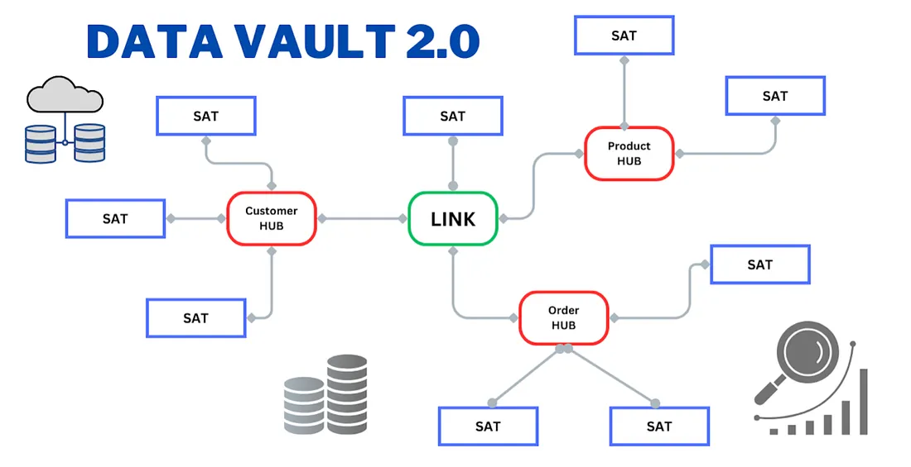
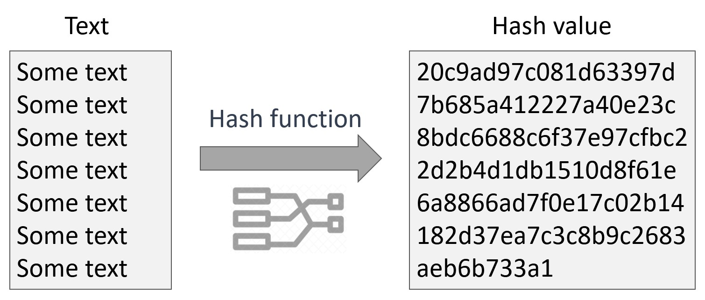

Compala is a data engineering project I worked on at BNP Paribas CIB, built using the Data Vault modeling approach to ingest, manage and structure dimensional data within a data warehouse.
Due to confidentiality, implementation specifics are not shared. This blog focuses on the conceptual architecture, modeling principles, and engineering practices behind the solution.
In investment banking environments, systems handle large volumes of data flowing across multiple upstream and downstream systems. At BNP Paribas CIB, this required designing a scalable and auditable data architecture that could support:
Fact data represents quantitative metrics used for aggregation and analysis.
Dimension data provides context to facts by describing entities.
Simple interpretation:
Traditional models such as Star Schema and Snowflake Schema often struggle with:
The Data Vault model was chosen for Compala because it provides:
Hubs store unique business keys representing core business entities.
Example: Customer, Account, Order
Links capture relationships between hubs, including many-to-many relationships.
Example: Customer ↔ Account
Satellites store descriptive attributes and full historical changes.

All changes are stored without overwriting previous data, ensuring complete auditability.
New attributes or sources can be added without impacting existing structures.
Separation of concerns:
Supports ingestion from ERP systems, APIs, flat files, and streaming sources, acting as a central data integration layer.
Every record can be traced to its source, load time, and transformation steps — critical for compliance and audits.
Independent loading of hubs, links, and satellites improves ingestion performance in distributed systems.
Business keys remain stable even when attributes evolve, ensuring robustness.
Acts as a persistent single source of truth containing raw, cleansed, and historical data.
Modern implementations are optimized for cloud and big data ecosystems, supporting:
Instead of natural keys, Data Vault uses hash-based keys to uniquely identify records.
Customer_HK = HASH(Customer_ID)
These act as primary and foreign keys in hubs and links, ensuring:
Hash Diff detects changes in satellite data efficiently.
HashDiff = HASH(Customer_Name + Address + Phone)
If the Hash Diff changes, a new record is inserted; otherwise, no update occurs. This eliminates the need for column-by-column comparisons and supports efficient incremental loads.

| Feature | Traditional (Star/Snowflake) | Data Vault |
|---|---|---|
| Keys | Natural / Composite | Hash-based |
| Change Tracking | Manual | Automatic (Hash Diff) |
| Scalability | Limited | High |
| History | Partial | Full |
| Architecture | Coupled | Decoupled |
The Data Vault approach provides a scalable, flexible, and fully auditable data modeling framework, making it highly suitable for complex environments like investment banking.
Through the Compala project at BNP Paribas CIB, I worked on designing a Data Vault-based architecture capable of handling large-scale, multi-source financial data with strong governance and traceability.
By leveraging:
the solution ensured data integrity, scalability, and compliance — which are critical in modern data platforms.